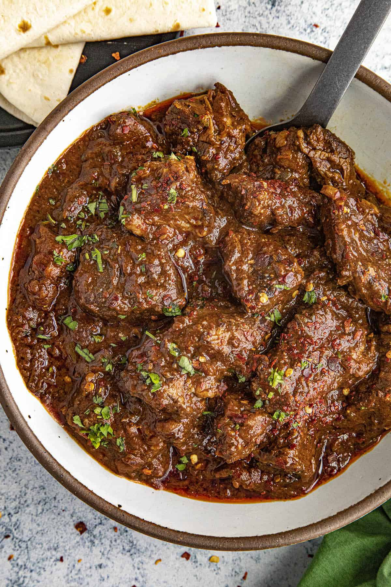
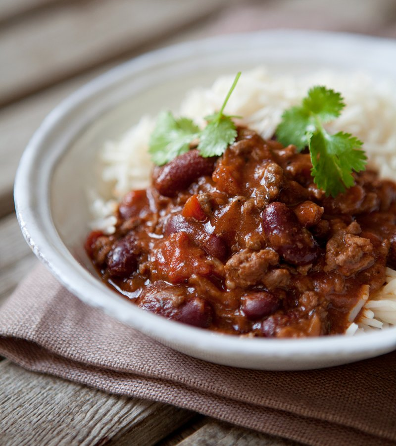

Chili Colorado
 View RecipeA traditional Mexican dish of beef, chili peppers, and spices, served with rice or tortillas.
Great during winter.
Chili Con Carne
 View RecipeChili Con Carne is a spicy stew made with ground beef, beans, and chili peppers.
It's a comforting dish that can be served with rice or as taco filling.
Pad Kra Pao
 View Recipe
View Recipe
Pad Kra Pao is a Thai stir-fry dish made with ground meat, holy basil, and chili peppers.
It's a quick and flavorful meal that can be served with rice.
Jeera Aloo
 View Recipe
View Recipe
Jeera Aloo is a simple Indian dish made with potatoes and cumin seeds.
It's a comforting and flavorful side dish that can be served with rice or nann alongside your favourite curry.
Red Lentil Dahl
 View Recipe
View Recipe
Red Lentil Dahl is a simple Indian dish made with red lentils and spices.
It's a comforting and nutritious meal that can be served with rice or naan.